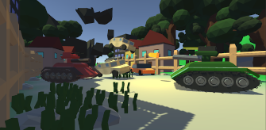

Esse robô foi desenvolvido com Arduíno usando a base da linguagem C++, ele foi o primeiro e o que deu o pontapé inicial para que eu estudasse mais e mais tecnologia! O vídeo foi gravando de maneira amadora pelo meu coordenador da minha escola onde estudei no ensino médio, todos os meus amigos inclusive o coordenador ficaram impressionados... Não é todos os dias que você ver um robô “caseiro” andando na sua frente não é mesmo?
Este foi o meu segundo projeto e meu primeiro jogo feito na Unity, lancei na PlayStore sem o intuito de lucrar apenas de obter mais conhecimento, não tive muito sucesso com ele na play store mas me deu um belo de um crescimento nos meus conhecimentos.
Esse é a versão mais recente do Charles, o robô em que venho dedicando boa parte da minha carreira como programador, em breve colocarei uma inteligência artificial bem avançada nele. Busco diariamente evoluir ele para que tenha uma importância para humanidade!
Um jogo baseado em tanques porém com uma jogabilidade Arcade e cartoon com um mapa 99% destrutível para alimentar o desejo de pessoas novas até mesmo pessoas mais velhas que gostam de Tanques.
